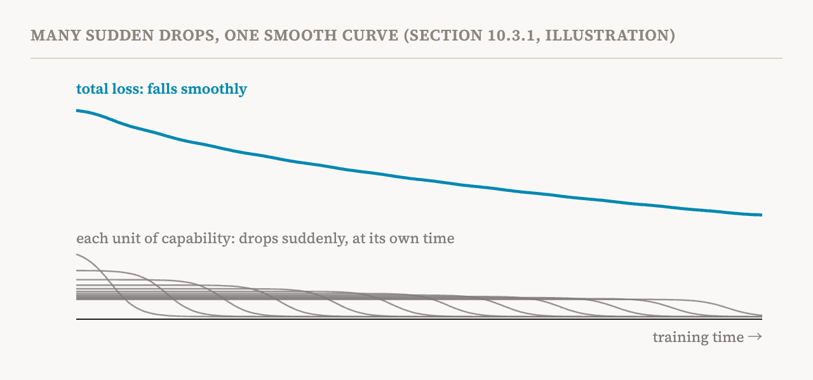
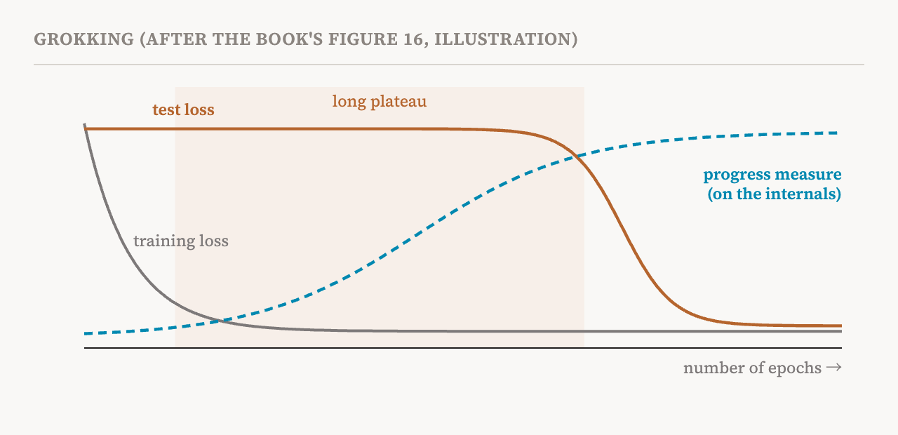

Part 26 watched models change gradually over training. This part covers section 10.3 of the book (pages 86–90), about change that is not gradual.
Smooth on average, abrupt in detail
Training loss curves usually make language models look as if they improve gradually and steadily, and on average they do; the scaling laws that predict loss from model size and data describe exactly this. But individual capabilities tell a very different story. For many tasks, performance can change sharply and suddenly, both across model sizes and across training. This suggests that models go through phase transitions, where a fairly small increase in scale or training time produces a qualitative change in behaviour.
The sharp changes show up inside models too. Attention heads can specialise into distinct roles over short stretches of training, and the formation of induction heads and of attention patterns that follow grammar has been linked to abrupt changes in behaviour. But the book notes that a change in behaviour and a change inside need not happen at the same time, or be equally abrupt. A capability may appear suddenly while the mechanism under it develops gradually; grokking, below, is the clearest example. So the book uses "phase transition" broadly, for any qualitative shift in behaviour or representations, without assuming that the shifts happen together or all at once.
Phase transitions matter for safety because they undermine forecasting. If a capability can appear with a small increase in scale or training time, testing the behaviour of intermediate checkpoints gives limited assurance about the final model, and scaling laws fitted to smaller models say little about larger ones. To predict whether and when a model will acquire a dangerous capability, we need to understand how and when transitions happen. The book organises the section as a workflow for a researcher with a training run in hand: detect the transitions, measure what underlies them, attribute them to components, and explain why they occur. It ends with the induction-head case study that part 19 already told.
Detecting transitions
The first difficulty is that the total loss can hide abrupt changes in individual capabilities. The quantisation model of neural scaling, from 2023, suggests that models learn discrete units of capability, each of which may appear abruptly. Their combined loss can still fall smoothly, because the units come up at different frequencies in the data. This helps explain why abrupt changes can occur, across both training time and model size, even when the overall loss curve is smooth.

So researchers look at different levels of detail. The crudest tool is the overall loss curve itself. A transition big enough to affect overall performance appears as a bump, visible as a local peak in the loss curve's rate of change. But most transitions are too small to see this way, so a flat rate of change is not evidence that nothing happened.
A metric aimed at a single capability, checked at every checkpoint, can pick out transitions the total hides. The book's model is the in-context learning score of the 2022 induction-head study: the model's loss at the 500th token of a context minus its loss at the 50th. Each loss on its own is dominated by things unrelated to in-context learning, such as how good the model is at short contexts in general; their difference isolates what the model gains from the extra context. Measured at every checkpoint, the score changes abruptly within a narrow window of training, the same window in which induction heads form, while the overall loss shows only a small bump (part 19's second figure). Tracking benchmark accuracy across checkpoints can also reveal transitions, though more coarsely, and comparing runs with different seeds shows whether a transition is consistent.
Some transitions are invisible in every metric chosen in advance, but can be recovered from the training data itself. A 2026 method called POLCA breaks down the changes in each example's loss along the few directions in which training actually moves, and groups examples whose losses change in similar ways over time. The groups turn out to correspond to concepts learned abruptly at identifiable points in training, with no matching event in the overall curve. At a coarser level, latent state models fit a hidden Markov model, a statistical model in which a system moves between a few hidden states, to a set of training measurements, and split the run into discrete phases; the moves between states flag candidate developmental events.
Is emergence a measurement artefact?
The book gives a box to a well-known objection. A 2023 study argued that the emergent abilities reported in 2022 were artefacts of discontinuous metrics: exact-match accuracy can jump even while the underlying log-likelihood improves smoothly. To illustrate the argument, if an answer counts as correct only when every one of its tokens is right, the score can stay near zero and then leap, even as each token's probability rises steadily. Metric choice does explain some reported cases, and claimed emergent abilities can appear or disappear when the same task is scored differently. But it does not explain all of them. Sharp transitions have been observed directly in continuous metrics, in per-example losses, and in internal representations within single training runs. The book's conclusion is that the robustness of a reported transition can be checked with continuous metrics, but which behavioural transitions reflect genuine changes in the model's mechanisms remains an open question.
Seeing it form inside: progress measures
Because behaviour and mechanisms can change on different schedules, researchers also measure the internals directly. A progress measure is a single number, defined on a model's internals, that changes continuously as a mechanism forms. It can therefore track the mechanism's development before the behaviour it supports changes. Progress measures are usually derived from a mechanistic analysis of the finished mechanism at the end of training, then evaluated backwards on earlier checkpoints.
They have been demonstrated most completely on grokking. Grokking is when a model reaches low training loss early in training but starts to generalise to unseen inputs only after a long further period of optimisation. It is seen almost only in narrow, closed settings, though general-purpose language models have shown conceptually similar behaviour. In modular arithmetic, adding numbers that wrap around like the hours on a clock, training accuracy saturates early while test accuracy stays near chance for many steps before rising sharply.

Mechanistic analysis of networks that have grokked recovers the algorithm they learned, trigonometric identities that carry out modular addition (roughly, numbers are represented as angles and adding them becomes rotating), and defines progress measures that track its formation. The generalising circuit grows gradually during the plateau. The sharp change in test accuracy corresponds to the switch from a memorising solution to the finished generalising circuit, followed by the removal of the memorising components. Grokking has been explained as a competition between a memorising circuit and a generalising circuit that differ in efficiency under weight decay, a penalty on large parameters; this account predicted, and experiments confirmed, ungrokking and semi-grokking, partial or reversed versions of the effect. Grokking can also be induced or removed by controlling the size of the parameters at initialisation, and it occurs beyond algorithmic tasks.
The book adds a caution. The standard grokking setup differs from language-model pretraining in many ways, including the size of the dataset, the weight decay and the number of passes over the data, and no study has yet shown that its quantitative conclusions carry over to large-scale pretraining.
Still, similar findings have appeared outside grokking. In masked language models, a 2024 study found that attention structures following grammar emerged during a sharp drop in the training loss, before accuracy improved on a grammar benchmark. A 2025 study found that attention circuits for recalling facts formed during the plateau in learning factual knowledge, before a rapid rise in performance. Changes inside can come before changes in what the model can do, and that motivates forecasting by monitoring internals, the subject of part 28.
Which components?
The methods so far cannot say which components a transition belongs to. In transformers, the specialisation of attention heads is probably the most intuitive level for this. Individual heads can specialise in grammatical relations, in fixed offsets of position, or in rare tokens, and the specialisation can appear abruptly. Induction heads form in a brief window that coincides with the jump in in-context learning. In masked language models, suppressing the grammar-following attention structure delays the capability that follows it. Sparse attention, too, appears abruptly and depends on repetition in the training data.
These events cluster in time. Several kinds of head, including induction heads and heads that attend along grammar, can acquire their functions within the same window. They appear alongside a peak in how well the model's perplexity predicts human reading times, an ability that then declines even as language modelling keeps improving. The book describes head specialisation as a kind of symmetry breaking: at the start of training, heads are indistinguishable and interchangeable, and during training they develop different functions despite having equivalent places in the architecture. Following this process helps identify when modular structure emerges. A 2024 study proposed three observable signs that together suggest modular internal structure: a transition during training, an emergent trend across model sizes, and solutions that fall into distinct clusters across random seeds. A structure that shows all three is a strong candidate for a discrete, specialised mechanism.
The book also warns against the obvious inference. A sharp transition in test loss or accuracy does not mean that any single component changed abruptly. In controlled settings, many attention heads develop induction-like behaviour gradually, their contributions largely add up, and the sharp transition in the whole comes from their combined effect. So locating a transition in a coarse metric does not identify the components responsible, and an analysis of components may find only gradual change without being wrong.
Why transitions happen
The book gives two kinds of explanation. The first is saddle-to-saddle dynamics. Theory for deep linear networks shows that different patterns in the data are learned at different rates (part 26), so training can have long stretches of slow improvement followed by rapid drops in loss. Seen as optimisation, gradient descent passes near a series of saddle points, places in the loss landscape that are flat but are neither a valley nor a peak, picking up more complex solutions along the way. Other networks show similar patterns, learning simpler functions before more complex ones. The specialisation of attention heads may also be related to symmetry breaking during training, though its relation to saddle-to-saddle dynamics is not yet established for realistic transformers.
The second is singular learning theory, which studies how the geometry of a model's parameter space affects learning and generalisation. Neural networks are "singular" because many different parameter settings can produce the same function. As a result, two models with similar loss can differ greatly in their effective complexity. The theory's local learning coefficient, or LLC, measures this around a solution: it looks at how quickly the volume of nearly-as-good parameter settings around the solution grows as slightly higher loss is allowed. Smaller values mean a more degenerate minimum, flatter in a higher-order sense, which roughly means a simpler solution. The LLC can be estimated at scale with a sampling method, stochastic-gradient MCMC.
Estimated LLC trajectories in transformers change at points that coincide with identifiable developmental events, including the stages of head specialisation above. This is the central empirical result of the developmental interpretability programme, which part 31 introduces among the research orientations. But the book is clear about its limit: current evidence for the LLC is largely retrospective. Phase transitions are detected and matched to known events only after training. Predicting a transition before it happens has not yet been demonstrated.
The induction-head case, seen again
The book ends the section by running the whole workflow on induction heads, the story part 19 told. Detection: the in-context learning score jumps within a narrow window, roughly 2.5 to 5 billion tokens into training for the models studied, while the total loss shows only a small bump. Measurement and attribution: induction heads form in that same window. Explanation by intervention: the smeared-key change, which let the circuit form inside one layer, gave one-layer models an in-context learning ability they otherwise never develop, and moved the transition earlier in deeper models. This is evidence that forming the circuit caused the capability, something no single checkpoint could show.
| Step | Tools | Caution |
|---|---|---|
| Detect | Loss bumps; capability-specific scores; grouping examples by loss trajectory; hidden Markov models | Total loss hides most transitions; some jumps are made by the metric |
| Measure | Progress measures on the internals | Built after the fact from the finished mechanism |
| Attribute | Head specialisation; three signs of modularity | A sharp total can come from smooth parts |
| Explain | Saddle-to-saddle dynamics; singular learning theory and the LLC | So far retrospective |
| Term | Meaning |
|---|---|
| Phase transition | A qualitative change in behaviour or internals from a small change in scale or training |
| Emergence | An ability appearing abruptly rather than gradually |
| Quantisation model | The idea that models learn discrete units of capability whose total looks smooth |
| In-context learning score | Loss at the 500th token of a context minus loss at the 50th |
| Progress measure | A number on the internals that tracks a mechanism as it forms |
| Grokking | Generalising long after the training data have been fitted |
| Weight decay | A training penalty that pushes parameters towards small values |
| Symmetry breaking | Interchangeable parts, such as heads, taking on different roles |
| Saddle-to-saddle dynamics | Training passing from one flat region of the loss to the next, learning more each time |
| Singular learning theory | The study of how the geometry of parameter space shapes learning |
| Local learning coefficient (LLC) | How degenerate the loss is around a solution; lower roughly means simpler |
| Retrospective and prospective | Matched to events after training, versus predicted before they happen |
Next, part 28 asks how all this can serve safety: forecasting behaviours before they appear, and intervening while training is still under way.